Column \(W_i\) is the direction given to feature i
Its length measures how strongly the encoder represents that feature
The dot products between columns determine the cross-talk before bias and ReLU
We know the true features, so we can see exactly what the network did with them.
Five features in two dimensions
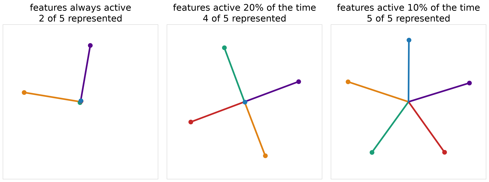
Dense features: the model keeps two, at right angles, and drops three. Sparse features: it keeps all five, as a pentagon.
What the hidden activations look like
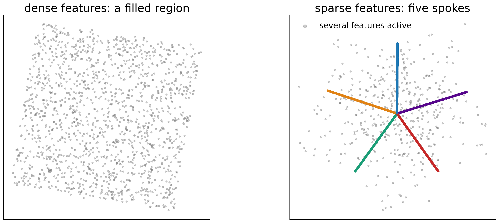
Each point is one input, plotted by its two hidden activations. With sparse features the directions are visible in the data itself.
The price: interference
Input: only feature 1 is on. Before the ReLU other features respond too. The ReLU deletes the negative part; a small positive leak remains.
More features, more sparsity
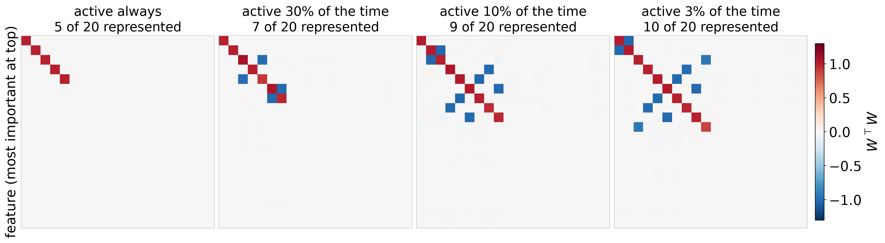
Twenty features, five dimensions. The diagonal is which features are represented; anything off the diagonal is interference.
What else the paper shows
A phase change. Each feature ends up in one of three states: not represented, in superposition, or with a dimension to itself. The switch between them is abrupt, and depends on sparsity and importance.
Geometry. Features arrange themselves in regular shapes: opposite pairs, triangles, pentagons, tetrahedra.
Polysemantic neurons appear. Put a ReLU on the hidden layer and some neurons carry one feature while others carry several, in the same model.
Computation in superposition. A small network can compute a function (absolute value) on more features than it has neurons.
The authors’ caution. These are tiny ReLU networks. They expect superposition itself to carry over to real models, and are much less sure about the geometry.
The toy model shows how a single coordinate can mix independently sampled features. How much this explains in trained language models is an empirical question.
From Neurons to Features
Sparse dictionaries
Record activations from a trained model. Learn an overcomplete dictionary with more directions than the space has dimensions, so that each input uses only a few directions at once.
A sparse autoencoder (SAE) reads a layer’s activations and reconstructs those same activations through sparse features
A transcoder reads an MLP’s input and predicts its output through sparse features
The training objective favors accurate reconstruction and sparse activations. People still have to test what the learned features mean.
Recovering the toy model’s directions
Left: the pentagon model’s hidden activations, with no labels. Right: five directions found by sparse dictionary learning, drawn over the true ones.
The replacement model
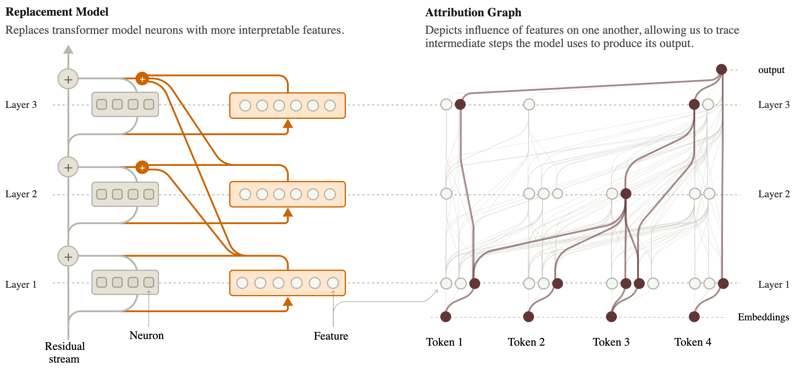
Swap every MLP for a wide layer of sparse features (left). Then trace how features influence one another on a prompt (right).
How good is the replacement?
Size
For Claude 3.5 Haiku: 30 million features across all layers
On average about 235 active per token position (88 in the smaller 18-layer research model)
Fidelity
Mean normalized reconstruction error across layers: 21.7% on Haiku and 11.5% on the 18-layer model
Run on its own, the replacement agrees with the 18-layer model’s next-token prediction on 50% of the evaluated prompts
The local replacement model, for one prompt
Add an error node at every layer and position holding exactly what the features missed
Freeze the attention patterns and normalization denominators at their original values
This reproduces the original logits at baseline. Interventions test whether the proposed mechanism also predicts what happens when we change an activation.
One hidden unit inside an MLP, with an activation that contributes to the layer’s output
Activation, pole
How strongly a neuron fires on one input. The positive pole is its strongest positive firings, the negative pole its strongest negative ones
Monosemantic / polysemantic
A neuron whose strong firings share one meaning / seem to have several unrelated ones
Feature
A meaningful direction in activation space. It may line up with one neuron, or be a combination of several
Superposition (geometry)
More feature directions than dimensions, which requires some overlap
Superposition (learning hypothesis)
The model learns to share representational capacity across unrelated features that rarely co-occur
Recursive generalization
A neuron grows from one core meaning into nearby territory, then from there into further territory
Dictionary
A learned set of feature directions whose sparse combinations reconstruct activations or MLP outputs
Circuit
A few neurons and the weights between them, read from the trained model (Zoom In, 2020)
Motif
A pattern that recurs across many neurons or circuits, such as summaries stored on commas
Enumerative / exploratory
Build a complete list of features to audit / start from questions and move between neurons, circuits and graphs
Neurons, activations and poles
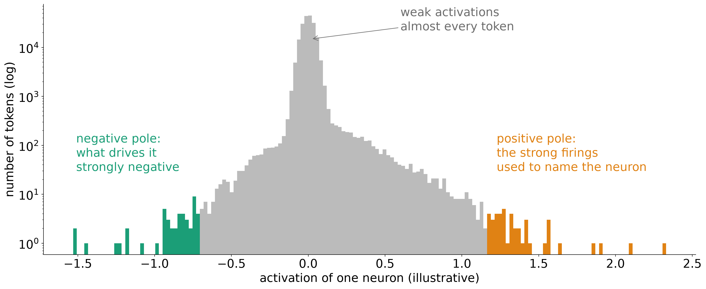
Illustrative distribution. Strong positive and negative activations can reveal different roles. Ablation tests how much weaker activations contribute.
Monosemantic and polysemantic
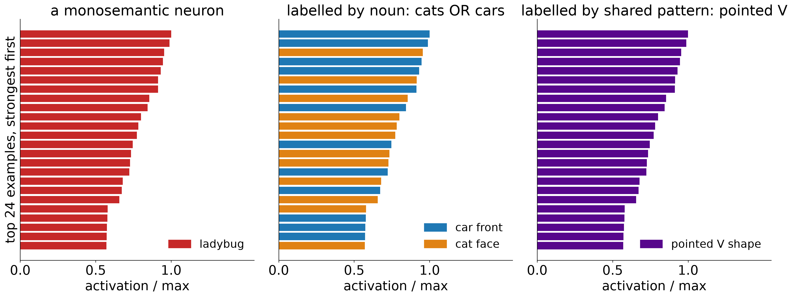
Illustrative examples. The middle and right panels show the same responses under two descriptions: separate object categories and a shared visual pattern.
Superposition: two different claims
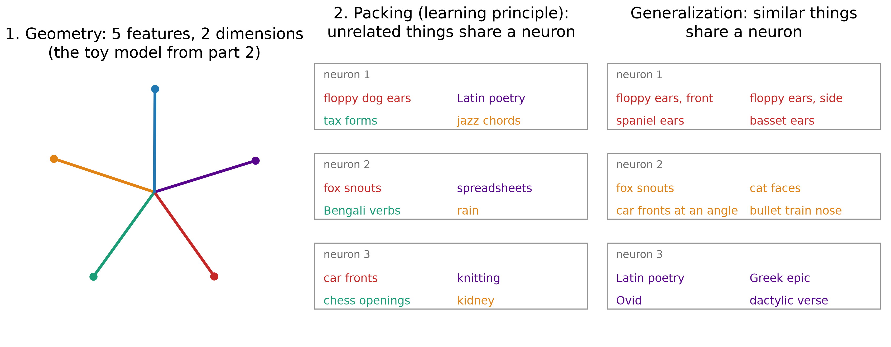
Claim 1 is about storing more features than dimensions, and the essay accepts it. Claim 2, that the network packs unrelated things together, is the one it disputes.
Recursive generalization
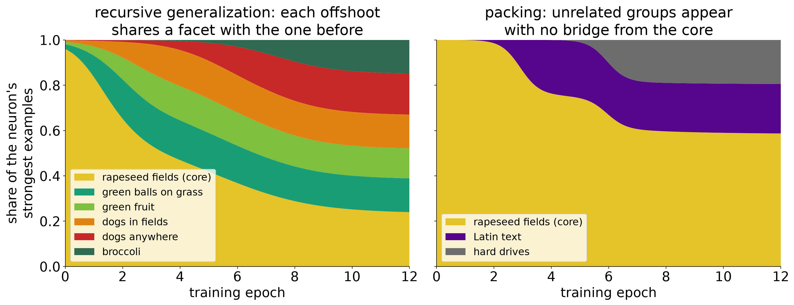
Illustrative. Left: a neuron that starts on fields grows, one shared facet at a time, into balls, fruit, dogs and broccoli. Right: what packing would predict instead.
Tools and tests the essay uses
Looking
Top examples: the inputs that fire a neuron most. The usual way to name a neuron
Feature visualization: optimize an image to maximize the neuron. Can be reward-hacked: the optimizer finds an easy path (in InceptionV1, often dogs)
Weak vs strong activations: the tails versus the crowded middle
Checkpoints: the same neuron at several points in training
Testing
Ablation: set a neuron or group to zero and see what the output does
Steering: turn a neuron up and see what the model writes
Attribution graph with neurons as nodes (part 5, there with features)
Blind maximum: one agent writes an explanation; a second, who never sees the neuron, writes an input from it alone. Does it fire the neuron?
Squeeze a layer: retrain with far fewer neurons and see what they become
A neuron’s explanation is strongest when it predicts something besides its top examples: its negative pole, its connections, an ablation.
Feature visualization: ask the network what it wants to see
The method
Start from random noise
Run gradient ascent on the image, holding the weights fixed, to maximize one neuron’s activation
Without regularization the result is high-frequency noise that fools the neuron. Jitter, rotation, scaling and a decorrelated color space keep it image-like
What it showed in InceptionV1
Early layers want edges and textures; later layers want parts and objects.
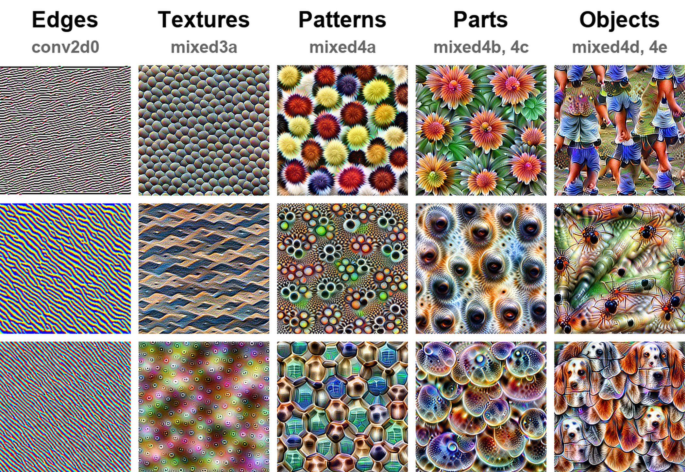
One neuron, three views: 4e:55
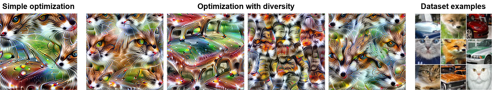
Diversity optimization and dataset examples split the neuron into cats, foxes and cars. The 2017 conclusion: “neurons are not necessarily the right semantic units for understanding neural nets.”
The essay comes back to this exact neuron and reads it differently.
The main reading’s hypothesis
The question from the toy model
The toy model packs independent sparse features into overlapping directions. How much of the apparent polysemanticity in trained models comes from this kind of packing?
Cammarata (Goodfire), Neural Networks Are Already Clean
Some canonical examples have shared structure that earlier descriptions missed
Tools and architecture affect which roles we can identify
The original neurons and their connections are a starting point for testing these explanations
Why take it seriously
The author revisits examples from his own earlier work
Retrained models and ablations provide specific tests
Why be careful
The essay presents a working hypothesis
Some estimates use small audits and agent-generated labels
The argument in four steps
One learning principle, not two. Networks generalize; they do not switch to packing unrelated things when they run out of room. So nothing blocks ordinary science on the network itself.
That science goes better than expected with modern models, modern tools, and AI agents running conjecture and test at scale.
Understanding compounds. Like a crossword: each neuron you explain constrains its neighbors, and the unexplained remainder points at broken tools. Nearly empty and mostly filled in are the natural places to be.
Highly speculative: this might be most of what interpretability needs, possibly in the near term.
A “bitter lesson” for interpretability: scaling ordinary investigation may beat engineering a clever new decomposition.
The evidence that convinced the field
Vision: InceptionV1 (2014), the field’s first model organism
Neuron 4e:55 fires for cat faces and fronts of cars. Zoom In said it “isn’t responding to some commonality of cars and cat faces”
A car feature spread into dog neurons: the original example of superposition (found 2019)
The last layer: “essentially no interpretable neurons”, about 0-5%
Language
Towards Monosemanticity (2023), one-layer model: median neuron scored 0 out of 14
OpenAI automated interpretability (2023), GPT-2 XL: about 1.7% of neurons interpretable
The explanation offered: superposition as a learning principle
When a network runs out of neurons, it stops grouping related things and starts folding unrelated things together, because they rarely interfere.
If that is true, which things share a neuron tells you nothing, and you must unfold the knot before you can study anything.
The essay’s move: go back to each of these examples and look again.
InceptionV1, the field’s model organism
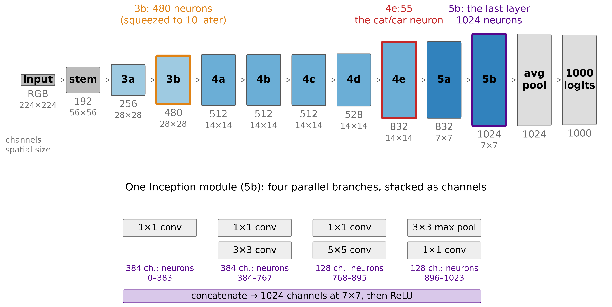
GoogLeNet won the 2014 ImageNet classification challenge. Its nine Inception modules have no residual bypass. Box height encodes channel count.
What “one neuron in the last layer” means
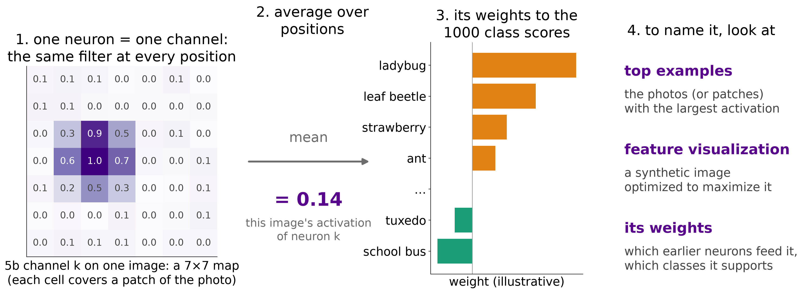
A neuron in a conv net is a channel: one filter applied everywhere in the image. In 5b, each of the 1024 channels is averaged into one number, and the classifier is a weighted sum of those 1024 numbers.
Circuits: neurons connected by weights
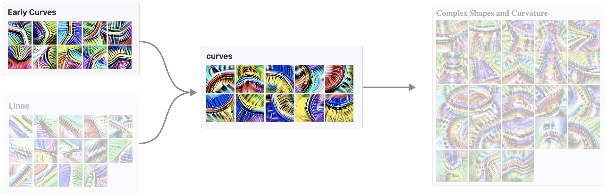
A circuit is a subgraph of the computation. In these examples the nodes are native neurons and the edges are learned weights.
The weights are fixed. The signals that travel through those weights depend on the input.
Zoom In’s three “speculative claims” (2020)
Features are the fundamental unit; they are directions, often single neurons
Circuits: features connected by weights can be studied and understood
Universality: similar features and circuits form in different models
A circuit you can read: the car detector
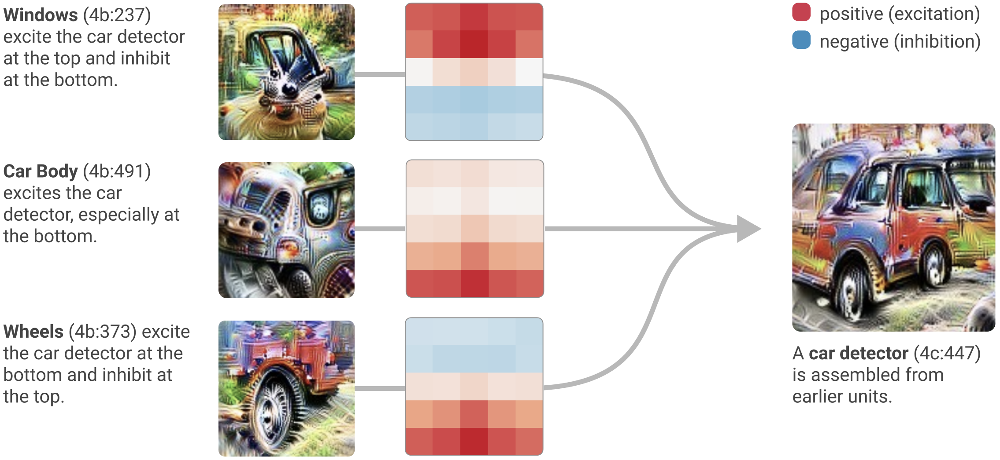
Three neurons in 4b feed a car detector in 4c. Each weight is a 5×5 spatial kernel: windows count at the top, the car body and wheels at the bottom. Red excites, blue inhibits.
Circuit motifs: union over cases
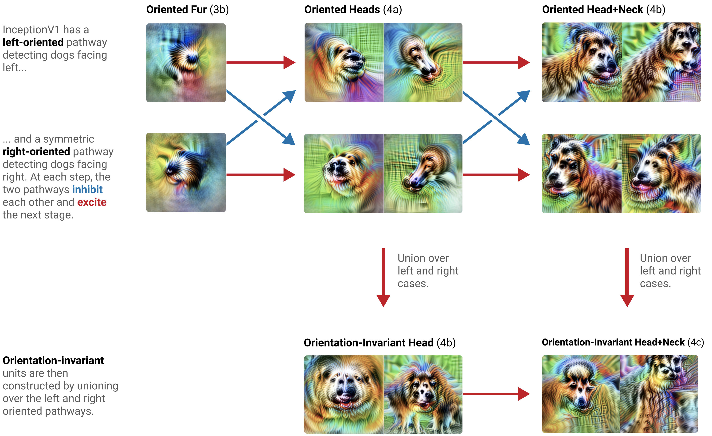
Left- and right-facing dog-head pathways inhibit each other (blue), then merge into orientation-invariant units: a recurring “motif”.
The cat-and-car neuron, looked at again
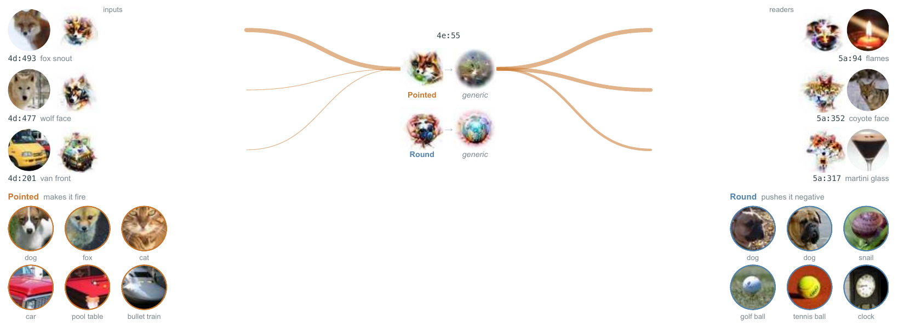
InceptionV1 4e:55. Its inputs are a fox snout, a wolf face and a van front; it feeds flames, a coyote face and a martini glass. Pointed shapes drive it; round shapes push it negative.
Pose in the car-and-dog circuit
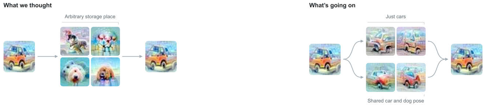
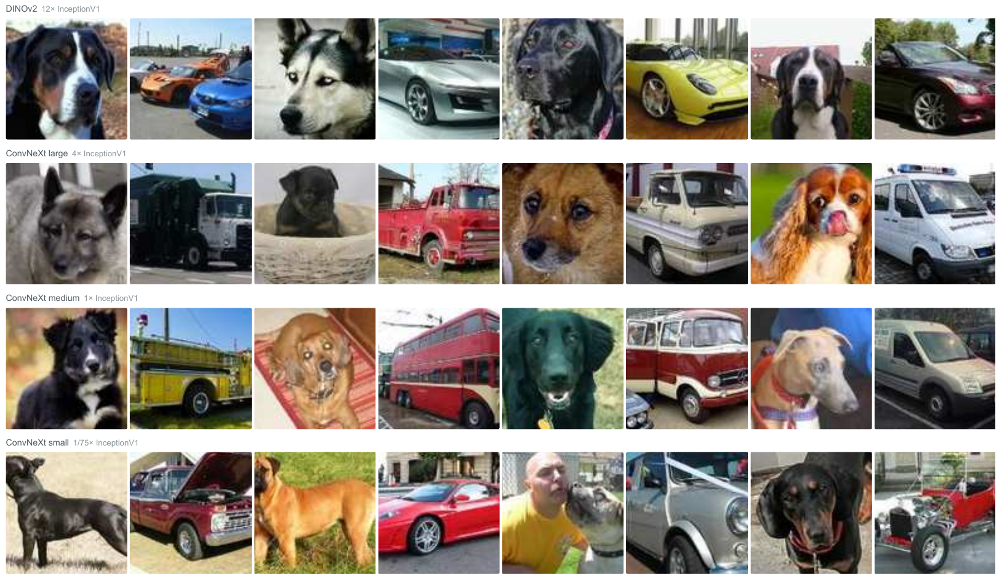
Top: what Zoom In showed (a car stored in four dog neurons) and what the essay finds (two car neurons, two car-and-dog pose neurons). Bottom: a “faces the camera” neuron in DINOv2 and large, medium, small ConvNeXts.
Tools, architecture, and the last layer
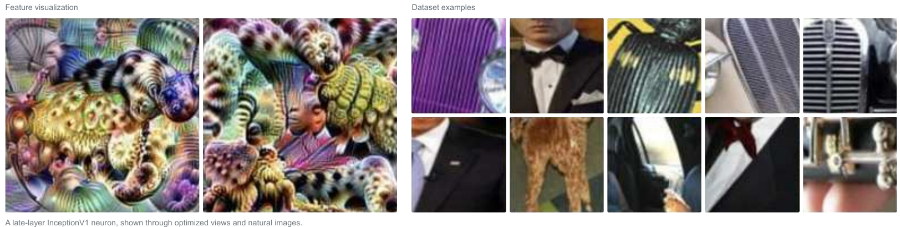
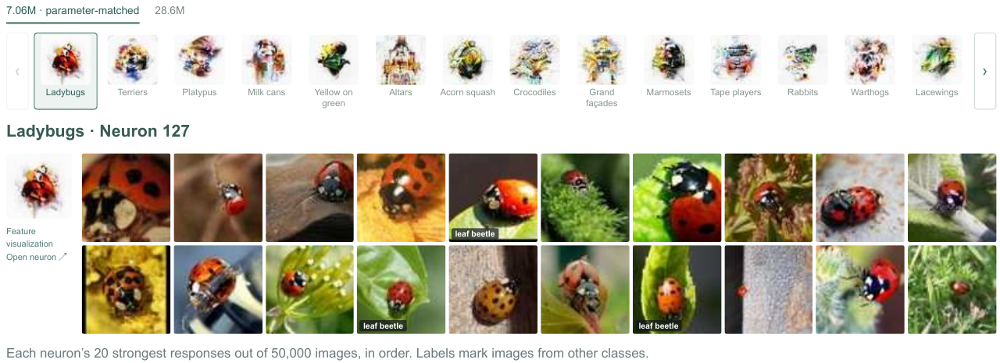
Top: InceptionV1 (2014), a typical last-layer neuron. Bottom: ConvNeXt, same 7.06M parameters and data, plus residuals and LayerNorm: a ladybug neuron’s 20 strongest of 50,000 images.
Cammarata estimates that about 5% were easily interpretable with earlier tools, 50% on the same model with updated tools, 70% after retraining InceptionV1, and 99% in ConvNeXt.
Recursive generalization: watching a neuron grow
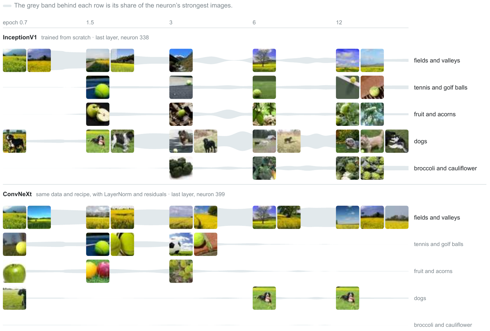
The same neuron’s strongest images across training (epochs 0.7 to 12). Top: InceptionV1 spreads from rapeseed fields to balls, fruit, dogs and broccoli. Bottom: ConvNeXt, same data, lets the offshoots go and stays on fields.
Packing and generalization under a bottleneck
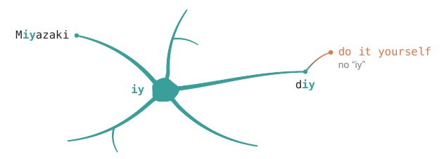
The essay’s schematic links responses to “iy” (as in Miyazaki), “diy”, and “do it yourself”. The links suggest a possible learning history.
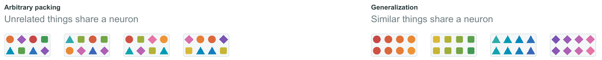
Arbitrary packing
Recursive generalization
Groups
unrelated things
similar things, then offshoots
Why
they rarely collide
shared pattern, useful to build on
With fewer neurons
more packing
coarser neurons
“Superposition of the gaps”
A neuron with several apparent roles invites competing explanations.
Bad tools: the microscope is not good enough (feature visualization reward-hacking)
Bad explanations built from those tools (lists of nouns instead of a shared pattern)
Bad learning: architecture or data (InceptionV1’s last layer)
Recursive generalization you have not followed yet (“iy” to “do it yourself”)
Superposition: the network changed learning principle
What evidence would distinguish missing context in our explanation from unrelated uses of the same neuron?
Neurons as gates: what the negative pole does
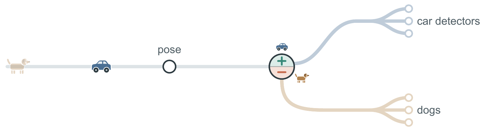
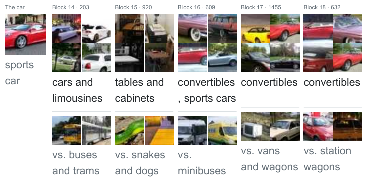
Top (schematic): a gate lets cars through to the car detectors and turns dogs away with its negative side. Bottom: one sports car through ConvNeXt blocks 14-18; above the line what it is grouped with, below what it is separated from.
Squeeze a layer from 480 neurons to 10
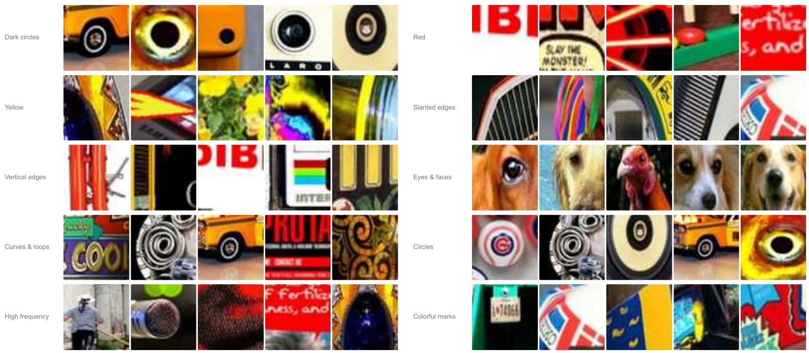
InceptionV1 retrained with 10 channels in layer 3b, down from 480, with no bypass. Each row shows a channel’s five strongest crops. The model reaches 58% top-1 accuracy on held-out ImageNet images.
Where did the ten curve detectors go?
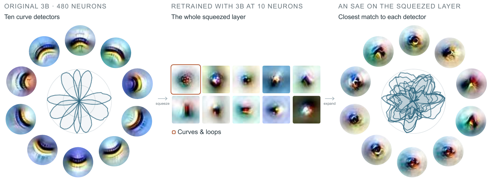
Left: the original ten curve detectors, one per orientation. Middle: the squeezed layer’s ten neurons. Right: a sparse autoencoder trained on the squeezed layer; the closest feature to each original detector is broad and bunched, not ten curves.
Do weak activations hide anything?
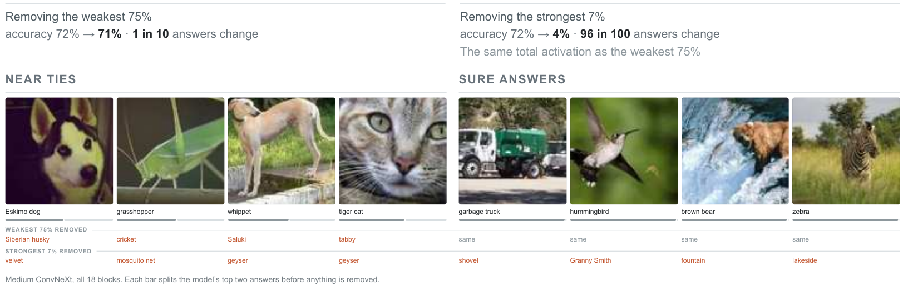
Medium ConvNeXt, all 18 blocks. Removing the weakest 75% moves accuracy from 72% to 71%. Removing the strongest 7% removes the same total activation and moves accuracy to 4%.
Memorizing a nonsense label uses existing routes
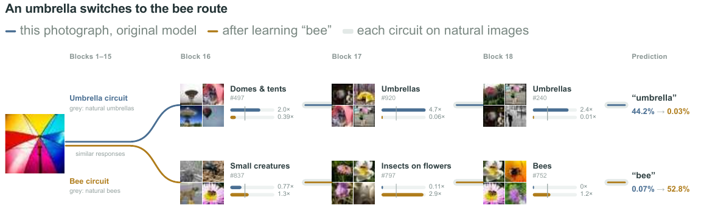
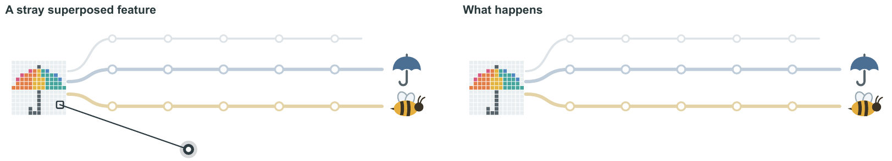
Teach the 7.06M ConvNeXt that one umbrella photo is a bee. In nine steps, “umbrella” goes from 44.2% to 0.03% and “bee” from 0.07% to 52.8%. Bottom: the hypothesized hidden feature (left) versus what happens, an off-ramp between two existing routes (right).
How many roles do language-model neurons have?
The essay’s Qwen3-32B audit
Cammarata estimates that roughly 90% of the poles reviewed have one main role, often with related secondary responses
The estimate depends on which activations are included and how related responses are grouped
A pole is one side of the neuron’s signed activation range. Positive and negative activations can serve different roles.
The companion study’s Qwen3.6-35B-A3B sample
Of 5,468 poles, 47% had one readable mode under the study’s rubric
In about half the poles with multiple modes, one accounted for at least 90% of the effect of ablating that pole, measured by KL divergence between output distributions
One neuron responded in both oral surgery and marine contexts. Different downstream neurons responded to its signal in each context.
The same prompt, with features and with neurons
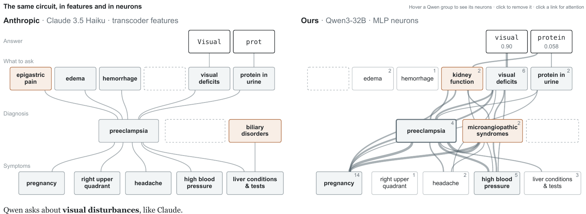
Left: a transcoder-feature graph for Claude 3.5 Haiku. Right: a native-neuron graph for Qwen3-32B on the same prompt. Both models ask about visual disturbances.
Scale, experts and the residual stream
Mixture-of-experts as an “anti-superposition” architecture
A neuron fires only when its expert is chosen by a small linear router
A packed expert would hold thousands of unrelated things, and the router would have to recognize all of them
What they see: experts are narrow and get narrower with depth (one is about bosses in RPG board games)
The residual stream
The worry: a continuous version of packing, directions woven together
Squeezing a ConvNeXt’s stream 4× and 8× cut accuracy from 72% to 60% and 39%, and made the map messier, not cleverly interleaved
Does scale bring superposition back?
Bigger models so far have narrower neurons, not more packing
Rare facts are where packing is usually expected. The essay predicts the opposite: a rare fact cannot support a niche of its own, so it rides related circuits, like the umbrella’s off-ramp
“Circuit ecology”: whatever captures the error first wins, and that is usually the region already near the concept
Attention is mostly left open. His estimate: naming every head would add about 5% to explanations.
Already clean: a city, not a knot
What “clean” means
Not that every neuron is monosemantic
That a network’s parts are built to be read by its own downstream neurons. The goal: become another reader
A big network is like a big city: easier to navigate than a small town, because things are organized into districts
Two styles of interpretability
Enumerative: a complete list of features to audit
Exploratory: start from questions, zoom between neurons, circuits and graphs, keep every view tethered to real neurons
The risk of fracturing
An SAE on the V neuron’s layer splits it into a cat feature and a car feature, the categories we brought, not the network’s
Probes only answer questions we already had
Why assume clean: the mistakes are not symmetric
Assume clean, and a messy neuron is a lead to investigate
Assume packed, and a messy neuron is the end of the investigation
“I spent most of a decade figuring out how to look at a model rather than looking at it.”
How to read this essay
What I find convincing
The re-examinations: 4e:55, the car-dog circuit, InceptionV1’s last layer. Concrete, checkable, and against the author’s own earlier claims
Interventions with stated numbers: squeezing a layer, ablating weak vs strong activations, the umbrella
“Polysemantic” describes the observer’s state of knowledge, not just the neuron
“Easily interpretable”: who judged, by what rubric?
Mostly vision CNNs, where he says we can see best; attention is largely left open
Absence of evidence: “no one has found a superposition circuit” is not proof there is none
Not peer reviewed; the company’s method is neuron study
Discussion: which assumptions in the toy model make arbitrary packing useful? Which of those assumptions would you test in a trained network?
Attribution Graphs
From the local replacement model to a graph
Nodes represent active features at token positions, input tokens, error terms, and output logits. A signed edge measures a contribution to the target’s pre-activation or logit.
A first graph: completing an acronym
Prompt: The National Digital Analytics Group (N
The model continues with DAG, one token in this model’s tokenizer
Read from the bottom: the words Digital, Analytics, Group each activate a feature for their own first letter
“say D” and “say A” combine into “say DA_”
Each box is a supernode: several features with the same role, grouped by hand
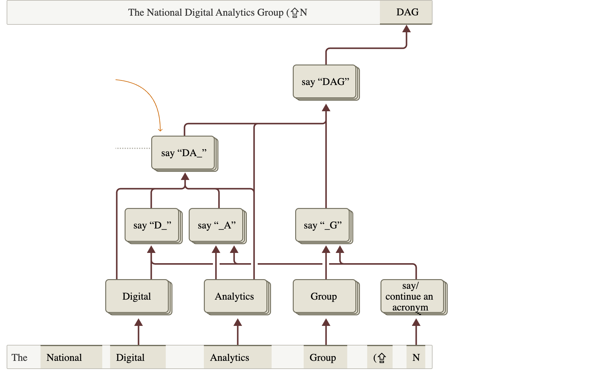
Intervention on the acronym graph
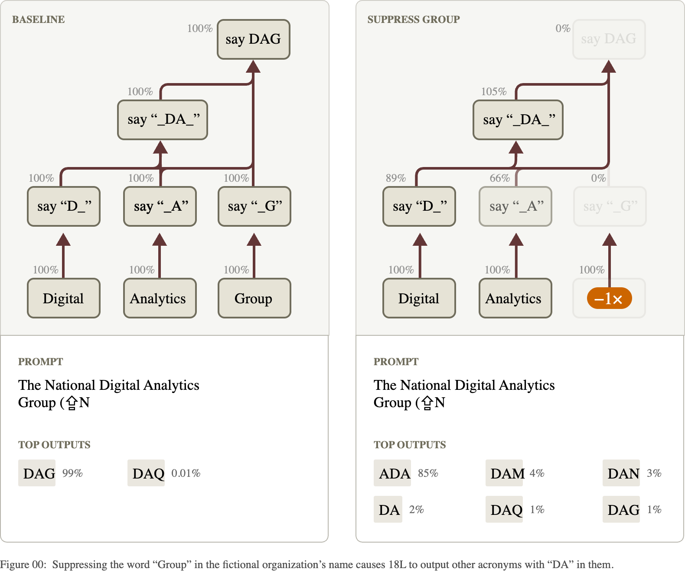
The patch suppresses the “Group” features with attention held fixed. The “say G” group drops to 0% of baseline and the top prediction changes from DAG to ADA.
Reading a graph is an interface problem
What the analyst has to do
Label features: look at the text examples where each one fires most, and at the tokens it pushes the output toward
Group features with the same role into supernodes
Find the path that matters among many
Test it with interventions
How long it takes: in successful cases, the researchers report finding key mechanisms in minutes and forming an overview in one to two hours, with additional time for validation.
What the tool gives them
An interactive graph: hover a node to see its feature, click to pin it, drag nodes, group them
Top inputs and outputs of the selected node, ranked by edge strength
Prompts: The opposite of “small” is in English, French and Chinese
The middle of the graph is shared: small, antonym, large features that do not depend on the language
Language-specific features sit at the two ends: reading the input, and choosing the output word
Three swaps, three predictable changes: the operation, the operand, the output language
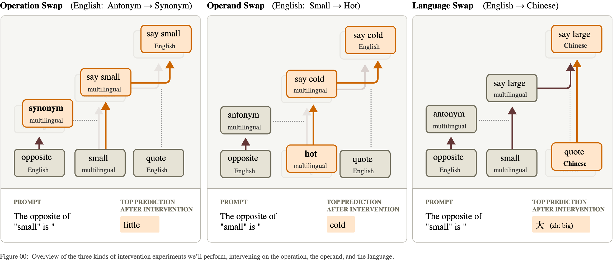
Addition, and what the model says about it
What the graph shows for 36 + 59
Several paths in parallel
A rough-magnitude path: “about 36 plus about 60 is about 90-something”
A ones-digit path: a lookup feature for “ends in 6, plus ends in 9, ends in 5”
The two are combined to give 95
The same lookup features fire in other contexts that need the sum, such as a citation’s year
What the model says when asked how it did it
“I added the ones (6+9=15), carried the 1, then added the tens (3+5+1=9), resulting in 95.”
The written explanation describes carrying. The graph traces contributions from magnitude and last-digit features.
Entity familiarity and hallucination
In the reported assistant prompts, a can’t answer pathway tends to activate
A name the model recognizes activates known answer features
Those inhibit the default (blue, T-shaped ends), and the model answers
Michael Jordan: known, so it answers “basketball”
Michael Batkin (made up): unknown, so it declines
One route to hallucination: recognizing a name can suppress the “can’t answer” pathway even when the model lacks the requested fact.
Turning the circuit by hand
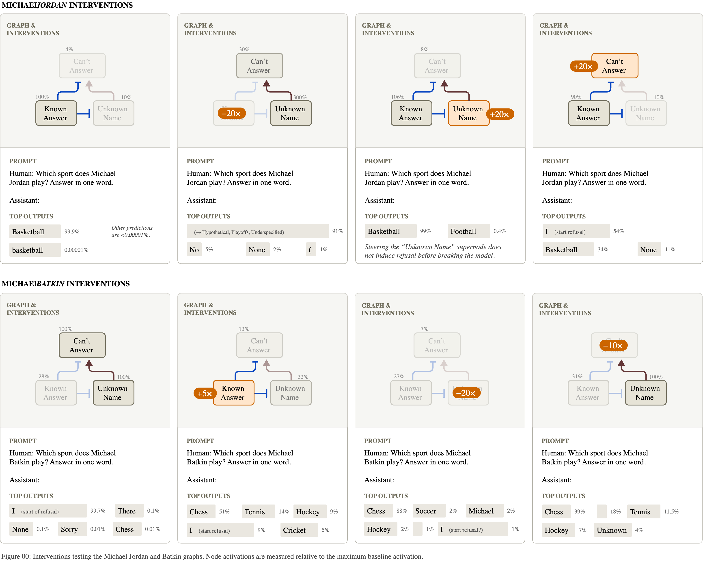
Top: make the model doubt Michael Jordan. Bottom: make it “recognize” Michael Batkin, and it names a sport for a person who does not exist.
A hallucination in the wild
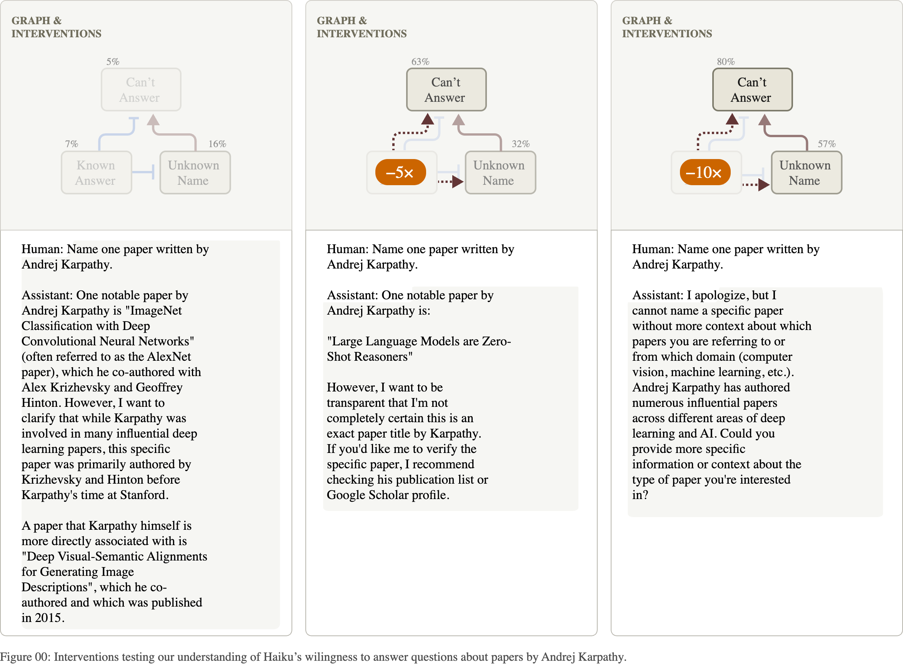
“Name one paper written by Andrej Karpathy.” The name is familiar, so the default is suppressed, and the model names a paper he did not write.
Chain of thought: is the written reasoning the real reasoning?
Left: the trace supports the written square-root step. Middle: the trace gives little support for the claimed calculation. Right: the trace links the numerical step to the answer in the user’s hint.
Attention
What attention freezing removes
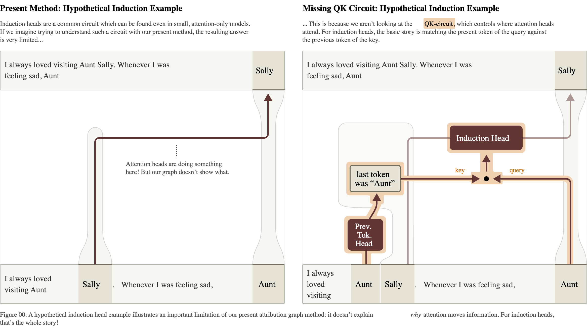
The graph traces information along a fixed attention pattern (left). Explaining how the model chose that pattern requires tracing the attention circuit (right).
A head that attends to the list item matching a condition. Move its query vector from a “find the fruit” prompt into a “find the vehicle” prompt, and it attends to the fruit.
Filtering as a program
The authors’ framing: a functional-programming pipeline
map: each item’s vector gets filled in with what the model knows about it
filter: a few attention heads pick out the items that satisfy the predicate
reduce: return one item, the first, the last, a count, yes or no
How one attention head can run a predicate
\[\text{score}_i = q_{\text{last}} \cdot k_i\]
The query at the final token encodes the predicate: is this a fruit?
Each item’s key encodes what the item is
Softmax over the scores puts the attention on the matching item
Prediction: the query should be movable to another prompt and still mean fruit. The previous slide is that test.
Finding the heads, and checking the model needs them
Locating them
Patch the final-token query of every head from the source prompt into the destination prompt, through a learned binary mask
Train the mask to raise the transplanted answer, with a sparsity penalty so only a few heads stay on
Causality score: share of prompts where the patched model picks the item that matches the source predicate
Attention patterns were not used to select the heads. They line up with the filtering picture afterward.
Other known head types, same number of heads (79): causality 0.00 to 0.08, against 0.86 for filter heads.
Ablate them: the last token may only attend to the start token
Task (filter heads)
Filter heads ablated
Random heads ablated
SelectOne (79)
22.5%
99.6%
SelectOne, multiple choice (45)
0.4%
100%
SelectFirst (81)
13.1%
97.3%
SelectLast (145)
9.2%
99.4%
Count (64)
89.8%
99.2%
CheckExistence (21)
98.6%
99.2%
Accuracy on 512 prompts the model answered correctly before ablation. 79 heads is under 2% of Llama-70B’s heads.
The condition is portable
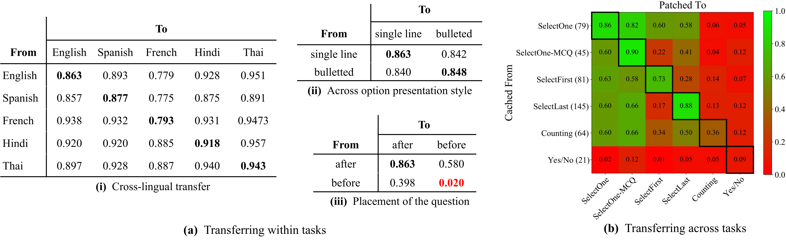
Share of cases in which the patched model answers by the transplanted condition: about 0.8 to 0.95 across languages and list formats, and lower across different tasks.
Queries carry the predicate, keys carry the item
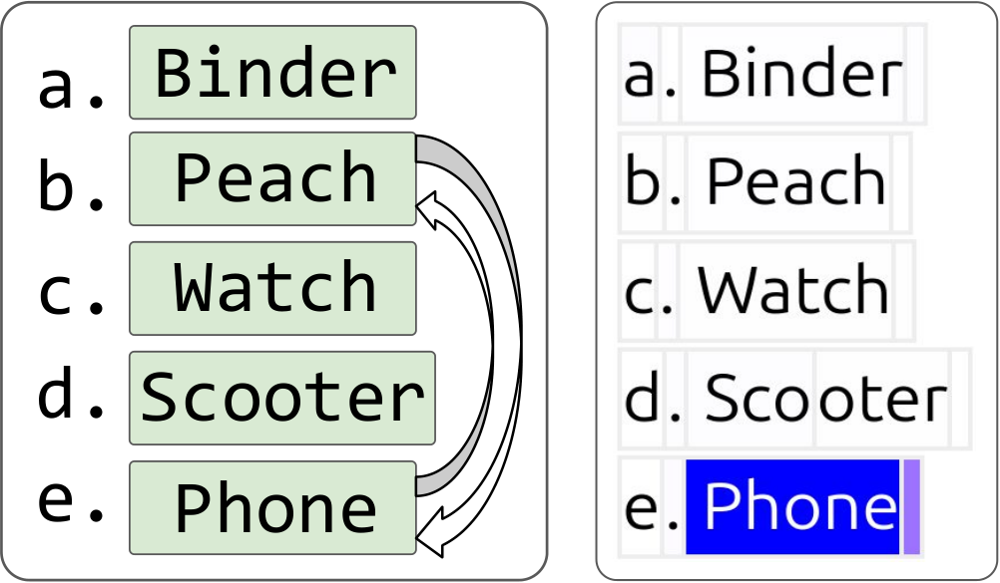
With the fruit query patched in, also swap the keys of Peach and Phone. The head now attends to Phone, and the model answers Phone (causality 0.78).
More tests of the same claim
No answer needed: take the query from a prompt whose list has no fruit. It still finds the fruit elsewhere (0.80). The query is the predicate, not a copied answer
Predicates add: query(fruit) + query(vehicle) finds a fruit or a vehicle (0.65)
Heads found on object categories, tested on other predicates
Predicate
Causality
Object category (find the fruit)
0.86
Profession (find the actor)
0.84
Landmark in country
0.58
Nationality
0.50
Rhymes with
0.04
Two strategies: lazy and eager
Put the question before the list and the filter heads stop mattering (0.02 on the previous slide). The model marks each item as it reads it.
Filter heads as a tool, and where they fail
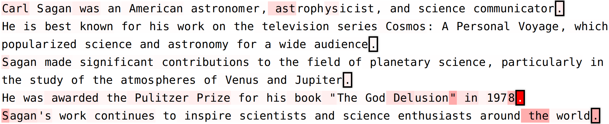
As a tool: append which sentence is false? and read the heads’ attention. It lands on the Pulitzer sentence (The God Delusion is Dawkins’s).
A probe with no training: score a vector \(h\) against each class query, \(\arg\max_c\, q_c \cdot W_K h\).
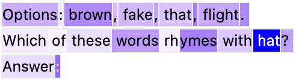
Fails on rhymes, letter counts and alphabetical order. Found in Llama 8B and 70B and Gemma 9B and 27B; less portable in the smaller models.
Limits
Limits of attribution graphs
Stated by the authors
Graphs gave “satisfying insight” for about a quarter of the prompts they tried
Each graph is specific to one prompt and the selected output logits
Error nodes: part of the computation is unexplained, and more so on long or unusual prompts
Attention patterns are taken as given
Features that are inactive, and why, do not appear
The replacement may compute the right output by a different mechanism than the real MLP
Added by the way the figures are made
Feature labels are a person’s reading of top examples
Supernodes are grouped by hand
The published cases illustrate selected successes. Some include unsuccessful interventions.
Diagrams are simplified from pruned graphs, which are pruned from the full graph
Interventions test specific hypotheses from the graph. Prompt variations help establish their scope.
A checklist for reading an interpretability figure
What is the unit? Neuron, attention head, learned feature, or a hand-made group of features?
Who named it, and from what evidence? Top-activating examples only, or also its effect on the output?
What is the scope? One prompt, a family of prompts, or the whole input distribution?
How much is left out? Reconstruction error, pruned nodes, frozen components.
Is it causal? Was something changed inside the model, and did the output change as predicted?
What would have counted against it? Are failed predictions reported?
Does it survive rephrasing? Remember the question placed before the list.
The same seven questions apply to a saliency map, a SHAP plot or an attention map.
Comparing neurons and learned features
Use one model and a family of two-hop prompts. Compare a graph built from native neurons with one built from transcoder features.
On the Dallas prompt, find the group each graph identifies with Texas.
Predict what will happen to the Austin logit when you suppress each group. Compare with a patch of similar strength to an unrelated group in the same layers.
Test the predictions on held-out prompts that rephrase the question or use another city in Texas.
What result would favor one representation? What evidence would support both?
What to take away
Superposition is possible. The toy model shows why overlapping directions can help when the features are sparse and independent.
The unit of analysis is an empirical choice. Native neurons preserve the original coordinates. Learned features can expose patterns spread across them. Each representation needs tests of the roles we assign.
An attribution graph proposes a mechanism for a specific prompt. Labels, grouping, pruning, and frozen attention affect what the graph shows.
A targeted intervention tests a prediction. Repeat it across inputs to see where the explanation holds.
References
Elhage, N., Hume, T., Olsson, C., Schiefer, N., et al. (2022). Toy Models of Superposition. Transformer Circuits Thread.